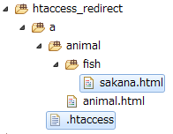
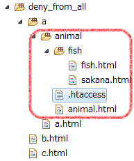

参考リンク
便利ツール： .htaccessEditor.htaccess
<IfModule mod_rewrite.c>
RewriteEngine on
RewriteBase /
RewriteCond %{REQUEST_URI} /sample/apache/htaccess_redirect/a/animal/fish/sakana.html
RewriteRule ^(.*)$ http://example.com/ [R=301,L]
</IfModule>
.htaccess の配置
コードの解説
サンプルは、URL「/sample/apache/htaccess_redirect/a/animal/fish/sakana.html」にアクセスされた時、 「http://example.com/」にリダイレクトさせる方法である。.htaccessを修正するときの注意点
.htaccessを修正したら、ブラウザのキャッシュを一旦削除する必要がある。(Chromeの場合).htaccess
<IfModule mod_rewrite.c>
RewriteEngine on
RewriteBase /
RewriteCond %{REQUEST_URI} /sample/apache/htaccess_put_rules/a/animal/animal.html [OR]
RewriteCond %{REQUEST_URI} /sample/apache/htaccess_put_rules/a/animal/fish/fish.html
RewriteRule ^(.*)$ /sample/apache/htaccess_put_rules/b.html [R=301,L]
</IfModule>
<IfModule mod_rewrite.c>
RewriteEngine on
RewriteBase /
RewriteCond %{REQUEST_URI} /sample/apache/htaccess_put_rules/a/a.html
RewriteRule ^(.*)$ /sample/apache/htaccess_put_rules/c.html [R=301,L]
</IfModule>
サンプル
/sample/apache/htaccess_put_rules/b.html.htaccess
<IfModule mod_rewrite.c>
deny_from_all
</IfModule>
.htaccess の配置
検証
/sample/apache/deny_from_all/b.html